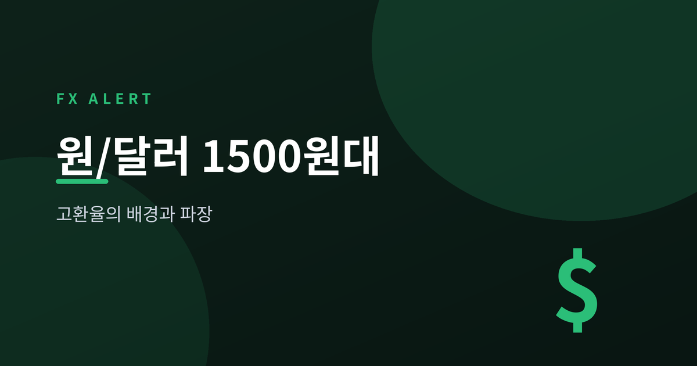
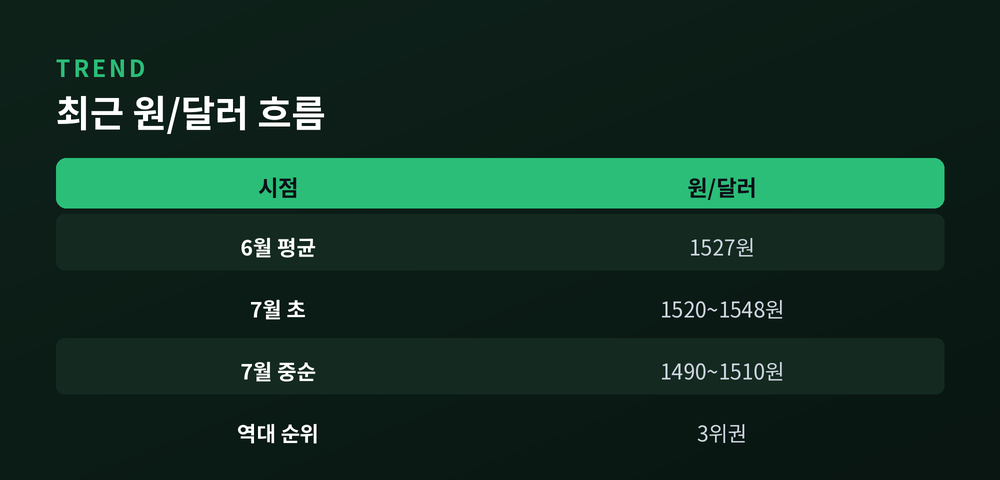
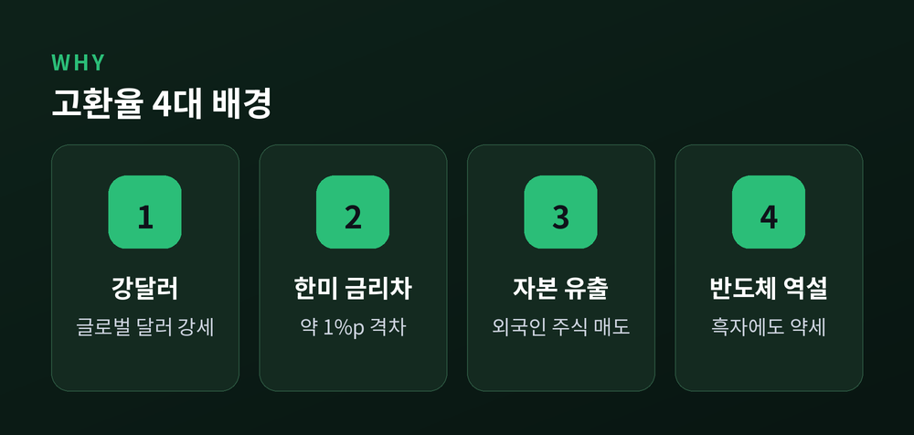
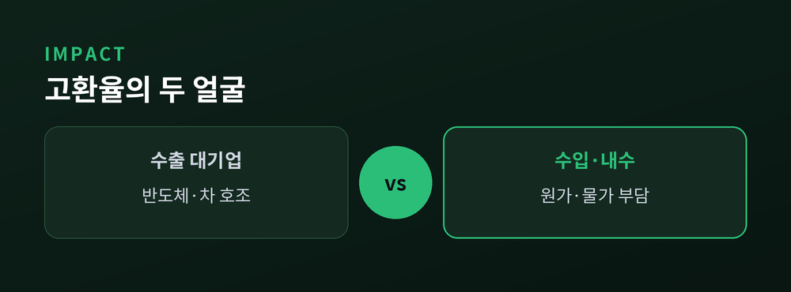
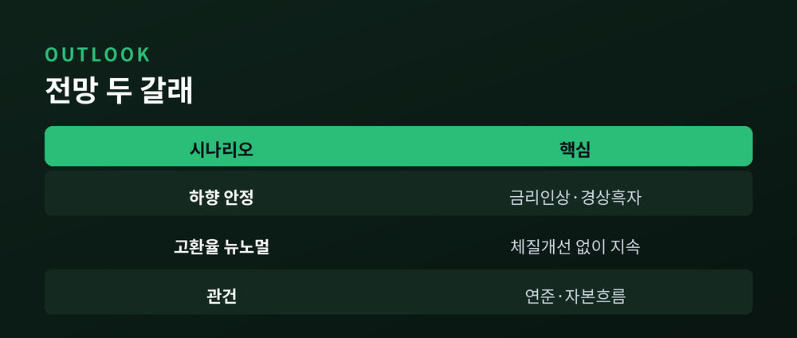

28년 만의 고환율, 배경과 파장 해설

▶ 3줄 요약
원/달러 환율이 다시 화두입니다. 이번 글에서는 1500원대 고환율이 어디에서 왔고, 어디로 번지는지 차분히 짚어보겠습니다. 숫자는 확인된 자료만 담았습니다.

환율은 지금 1500원 언저리에 있습니다.
2026년 6월 월평균은 1527원이었습니다. 외환위기였던 1998년 1·2월에 이어 역대 세 번째로 높은 수준입니다.
7월 들어 결은 조금 달라졌습니다. 초순에는 1520~1548원까지 올랐다가, 중순에는 1490~1510원으로 소폭 물러섰습니다.
1500원은 심리적 경계선입니다. 이 선을 넘어선 것은 2009년 글로벌 금융위기 이후 오랜만이었습니다.
예전엔 1300원만 돼도 시장이 술렁였습니다. 지금은 1500원에도 담담합니다. 고환율이 어느새 일상이 된 셈입니다.

높은 환율에는 몇 가지 배경이 겹쳐 있습니다.
첫째, 강달러입니다. 달러가 세계적으로 강세를 보이면서 이제는 원화만의 문제가 아니게 됐습니다.
둘째, 한미 금리차입니다. 미국 기준금리는 3.50~3.75%, 한국은 2.50%입니다. 1%포인트가 넘는 차이가 원화에서 달러로 자금을 끌어당깁니다.
셋째, 자본 유출입니다. 경상수지는 흑자인데 외국인은 국내 주식을 팔고 나갑니다. 국내 투자자의 해외 투자도 늘었습니다.
여기서 역설이 생깁니다. 5월 반도체 수출은 한 해 전보다 167.7% 늘며 경상수지를 386억 달러 흑자로 밀어 올렸습니다. 사상 최대입니다.
그런데도 원화는 강해지지 않았습니다. 벌어들인 달러가 국내로 온전히 돌아오지 않기 때문입니다.

고환율의 파장은 두 갈래로 갈립니다.
먼저 물가입니다. 3월 수입물가지수는 한 달 새 16.1% 올랐습니다. 1998년 1월 이후 28년 2개월 만의 최대 상승폭입니다. 원유·가스·곡물 값이 함께 뛴 탓입니다.
환율이 10% 오르면 소비자물가는 6개월 뒤 최대 0.5%포인트 밀려 올라갑니다. 장바구니와 외식비가 오르는 이유가 여기에 있습니다.
기업의 표정은 엇갈립니다. 반도체와 자동차 같은 수출 대기업은 환율 덕을 봅니다.
반면 원자재를 수입해 가공하는 기업, 달러 빚이 많은 기업은 원가와 이자를 함께 떠안습니다.
"환율이 오르면 수출기업이 웃는다"는 말은 절반만 맞습니다. 부품을 수입하는 협력업체에는 고환율이 오히려 함정이 되기도 합니다.

시선은 7월 16일 금융통화위원회로 쏠립니다.
시장에서는 한국은행이 기준금리를 0.25%포인트 올려 2.75%로 갈 것이라는 전망이 나옵니다. 사실이라면 3년 6개월 만의 인상입니다.
물가를 누르고 환율을 방어하려는 뜻입니다. 다만 내수와 가계부채가 발목을 잡습니다. 금리를 마냥 올리기는 어렵습니다.
전망은 갈립니다. 한쪽은 금리 인상과 경상 흑자, 반도체 호조를 근거로 환율이 1500원 아래로 내려앉으리라 봅니다.
다른 쪽은 다르게 봅니다. 경제 체질이 바뀌지 않으면 고환율이 뉴노멀로 굳는다는 것입니다. 금리 하나로 환율을 잡기는 어렵다는 분석도 나옵니다.
관건은 미국 연준의 인하 시점과 자본의 흐름입니다.
정리하면 이렇습니다.
1500원대 환율은 한 가지 원인의 결과가 아닙니다. 강달러와 금리차, 자본 흐름이 함께 그려낸 풍경입니다.
그래서 답도 하나일 수 없습니다. — 숫자 하나에 일희일비하기보다, 흐름의 방향을 읽는 편이 낫습니다.
환율이 다시 1500원 아래에서 자리를 잡을지, 우리는 지금 그 갈림길에 서 있습니다.
이 글은 정보 제공을 위한 해설이며, 특정 투자를 권유하는 것이 아닙니다.
참고 소스